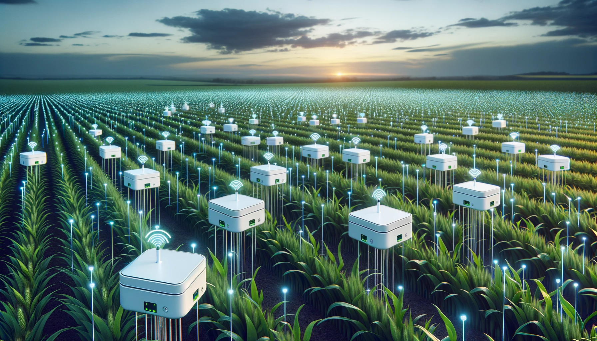
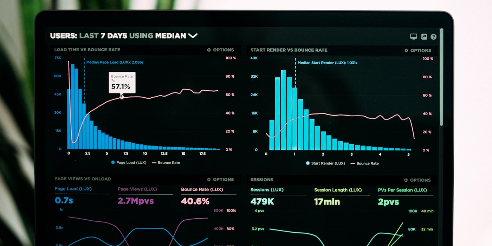

AgroFlow's full-stack approach combines cutting-edge AI with accessible software to deliver precision irrigation for every type of farm.
AgroFlow fuses five distinct real-time data sources into a single, coherent model of your field's crop health and water needs.

Agricultural drones capture ultra-high-resolution multispectral images at centimeter-level accuracy, detecting pest stress patterns invisible to satellites. Compatible with DJI Agras, senseFly eBee, and other commercial ag-drones via our API.
Ground-level IoT probes measure volumetric water content at multiple soil depths, giving a precise picture of root-zone moisture. Compatible with most commercial sensor brands via our open API.
7-day hyper-local weather forecasts — including precipitation probability, temperature, humidity, and wind — are integrated to prevent unnecessary irrigation ahead of rainfall events.
Multispectral satellite imagery (NDVI, NDWI) maps vegetation health and water stress across your entire field at 10m resolution — detecting dry patches invisible from the ground.
Each crop species has unique water requirements at each growth stage. AgroFlow's crop model library covers 120+ crop varieties, calibrating recommendations to the plant's actual biological needs.

At the core of AgroFlow sits an adaptive AI model trained on millions of field-season data points. It doesn't just follow rules — it learns the unique microclimate and soil behaviour of each individual field over time.
The model continuously updates its predictions as new sensor readings arrive, improving accuracy season after season the more it operates on your farm.
Processes millions of sensor data points per day across all connected farms using distributed cloud computing.
Field-specific models that adapt over multiple seasons, learning local soil behaviour and microclimates.
Recommendations update within seconds of new sensor data arriving — always reflecting the latest field conditions.
Every recommendation includes a plain-language explanation of why AgroFlow suggests that irrigation schedule.
Blends ECMWF, GFS and local station data for the most accurate precipitation and evapotranspiration forecasts.
All farm data is encrypted end-to-end. Your field data is never shared with third parties without explicit consent.
Computer vision models trained on 50,000+ pest-damage images classify infestation type and severity, predicting spread patterns within 72 hours.
AgroFlow's architecture was designed from the ground up to be modular, reliable, and scalable — from a single field to thousands of hectares.
AgroFlow runs on a modern, scalable cloud architecture — combining IaaS, PaaS, and SaaS layers with specialized Big Data and AI services.
Designed for farmers, not engineers. AgroFlow's mobile app delivers everything your team needs to manage irrigation across multiple fields — from a single screen.
View and approve AI-generated irrigation plans for the week ahead with one tap.
Visualize moisture levels and health across all your fields on an interactive map.
Get notified of critical soil stress events, equipment issues, or unusual readings before damage occurs.
Track water savings, yield trends, and cost reductions across multiple growing seasons.
Start your 14-day free trial. No hardware required. No credit card needed.
Set up in under 5 minutes · Works with your existing sensors